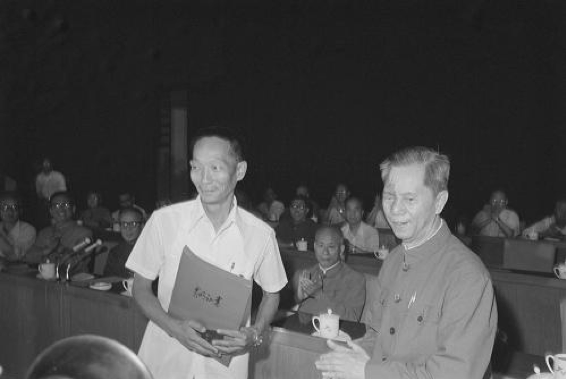
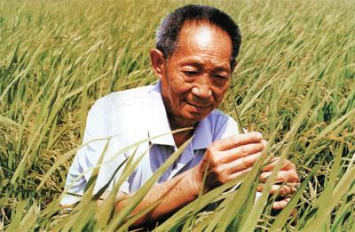
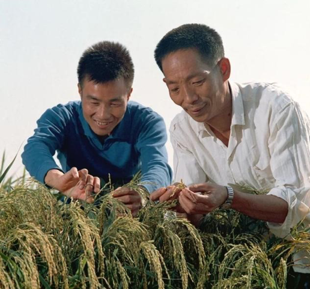
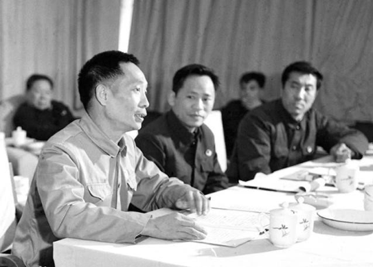
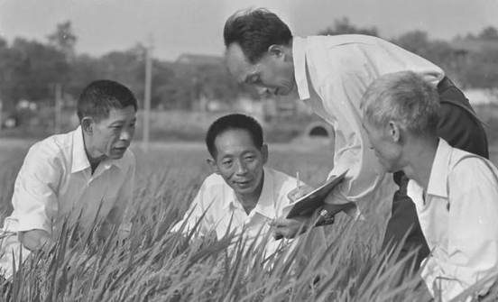
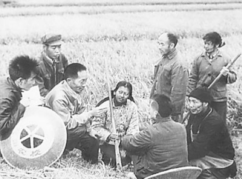
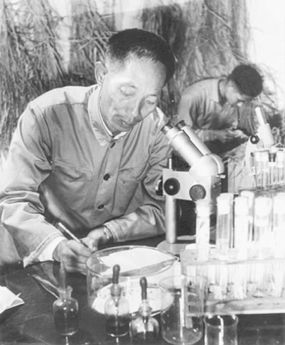

1981年的授奖大会上，袁隆平（左）代表全体从事杂交水稻研究的科技人员领奖
中国共产党百年瞬间
1981年6月6日，国家科委、农委在北京联合召开授奖大会，授予全国籼型杂交水稻科研协作组袁隆平等人特等发明奖。这是新中国成立以来国家颁发的第一个特等发明奖。袁隆平一生都在和土地打交道，一生都在为水稻的高产优产上下求索，您现在听到的是他在获得2004年感动中国年度人物时的获奖感言。
袁隆平：我现在还有两个心愿：一个心愿就是把第三期的超级稻，这一个目标要实现。如果这个实现增产的粮食每年可以多养活7千多万人口；还有一个愿望，就是把杂交稻推广到全世界。

袁隆平在观察杂交水稻
籼型杂交水稻是我国农业方面的一项重大发明，1964年开始研究，经过袁隆平等全国有关单位的科技工作者共同努力，于1973年在世界上首先育成强优势的杂交水稻，随后又研究解决了繁殖制种和栽培技术，为大面积推广创造了条件。

1976年袁隆平和同事李必湖在观察杂交水稻生长情况

1978年3月全国科学大会上的袁隆平
从1981年杂交水稻成果在全国获得第一个特等发明奖之后，袁隆平又连续获得众多国际性科学大奖，被誉为“当代神农”和“世界杂交水稻之父”。袁隆平说，中国人不但能养活自己，而且能为其他发展中国家，为解决世界粮食短缺问题作出贡献。您现在听到的是2017年87岁的袁隆平在一次国际论坛上的英文演讲。

1980年10月，袁隆平团队攻克制种关
袁隆平英文演讲：大米是一种世界性食物，大米养活了世界一半以上的人口……如何才能喂饱全世界嗷嗷待哺的众多人口，这是摆在我们面前的严峻挑战……

早期研究阶段，袁隆平（左三）在田间为农民讲课
国际水稻研究所所长斯瓦米纳森博士曾经说，我们把袁隆平先生称为杂交水稻之父，是因为他的成就不仅是中国的骄傲，也是世界的骄傲。2008年3月，袁隆平获得世界华人终身成就奖。袁隆平说，堪称影响世界的华人，应该是那些对世界经济、社会乃至观念上产生巨大影响的人，自己还要继续努力。

袁隆平在做科学实验